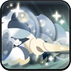

Toppings:


Enormes buques mercantes con estatuas de sirenas adornando la proa llenan los muelles de la Crème Republic , todos esperando la orden de White
Oyster Cookie. Todo lo que se necesita es una sola ola para indicar a los barcos gigantes que crucen el océano y creen nuevas mareas.
Con su noble encanto y sus elocuentes palabras que pueden dirigir la conversación como ella desea, uno no puede evitar sentirse asombrado
por la presencia de Oyster Cookie.
"White Oyster Cookie. Creo que no se requiere más presentación."
Esta piedra contiene un pedazo del alma de White Oyster Cookie. Su superficie iridiscente puede hipnotizarte con reflejos coloridos.


El primer tiempo de reutilización de la habilidad de Oyster Cookie se acortará, lo que permitirá un uso más rápido de la habilidad.
Invoca soldados de la Casa Oyster y aumenta el% CRIT y el DAÑO CRIT para ella y sus aliados cercanos durante un cierto período de
tiempo. Los soldados convocados cargarán inmediatamente contra los enemigos y les causarán daño. Los soldados tendrán DEF adicional
hasta que el HP de sus escudos llegue a cero.